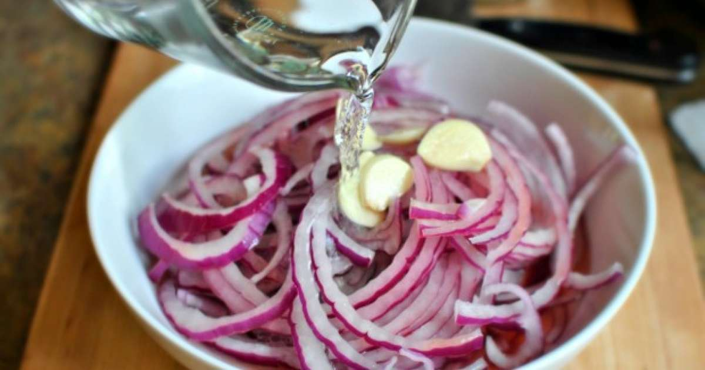

1. Water

Water in a glass
Plane water in a glass, nothing special...
Still just water.
Ingredients
- Water
- Glass
Steps
- Get a glass
- Find a water source
- Pour water in the glass
2. Onion Soup
Onion peaces in water
A realy easy soup that only has three ingredienses
Ingredients
- Water
- Onions
- Salt
- If you want to get wild, then carrots
Steps
- Worm the water
- Cut the onions
- Add the onions in to the boiling water
- Add allso salt
- If you chose the wild version, then cut the carrots and add em too
- Boil everything so that they are well done
- Thats it, you got onion soup!